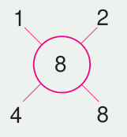
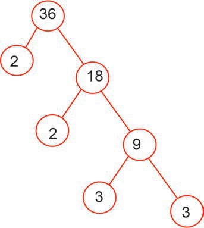

Kutafuta vigawo vya namba kwa kutumia namba tasa
Namba tasa zinaweza kufafanuliwa kwa kutumia michoro ya ngoe. Ngoe ni michoro ya namba kuonesha vigawo.
Kazi ya kufanya ya nne
Kubainisha namba tasa kwa kutumia vigawo
Hatua
1.
Orodhesha namba za kuhesabia 1 hadi 15, kisha zungushia duara namba hizo.
2.
Andika vigawo vya kila namba na kuwakilisha vigawo hivyo kwenye matawi ya duara. Kwa mfano,

3.
Orodhesha namba zilizo na matawi mawili tu, yaani zilizo na vigawo viwili.
Namba ulizoorodhesha katika hatua ya 3 zinaitwa namba tasa.
Mfano wa kwanza
Andika 36 kama zao la vigawo tasa
Njia

Kwa hiyo, 36 = 2 × 2 × 3 × 3.